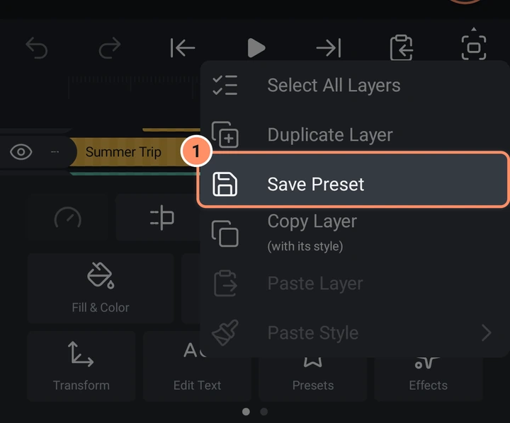

Assets, Vorlagen und Voreinstellungen
Nutze deine besten Arbeiten wieder: Speichere Ebenen als Assets, starte mit Vorlagen und behalte deine Lieblingslooks als Voreinstellungen.
Auf dieser Seite
AbsentMotion bietet drei Wege, Arbeit wiederzuverwenden. Sie unterscheiden sich darin, was sie speichern.
| Speichert | Verwendet über | |
|---|---|---|
| Asset | Eine Ebene oder eine ganze Animation, verknüpft mit ihrer Quelle | Hinzufügen-Menü, Objekt / Asset |
| Vorlage | Ein ganzes Projekt mit Plätzen, in die du deine eigenen Medien einsetzt | Hinzufügen-Menü, Vorlage; Startbildschirm, Vorlagen |
| Voreinstellung | Den Look und die Bewegung einer Ebene (Effekte, Keyframes, Rahmen, Mischmodus und mehr) | Werkzeugraster, Voreinstellungen |
Assets
Ein Asset erstellen
- Wähle im Editor eine Ebene oder Gruppe aus und wähle im Ebenenmenü Unter „Meine Assets“ speichern. Eine Meldung sagt "In Meine Assets gespeichert".
- Wähle auf dem Startbildschirm im Blatt für neue Projekte Asset und baue die Animation in einem eigenen Projekt. Ein Asset-Projekt hat einen transparenten Hintergrund.

Assets erscheinen unter dem Chip Assets auf dem Startbildschirm.
Ein Asset verwenden
Hinzufügen, Objekt / Asset, Asset / Projekt listet deine Assets (neueste zuerst) und danach deine anderen Projekte, mit einem Suchfeld. Tippe auf eines, um es am Abspielkopf als Gruppe einzufügen. Ein Asset bleibt mit seinem Quell-Asset verknüpft. Ein so eingefügtes Projekt ist dagegen eine einfache, unabhängige Kopie.
Eine verknüpfte Ebene hat das Werkzeug Asset-Eigenschaften mit zwei Buttons.
- Original-Asset öffnen öffnet das eigene Projekt des Assets, damit du es ändern kannst. Wurde dieses Projekt gelöscht, bietet die App Quellprojekt wiederherstellen (aus dieser Ebene ein Projekt machen) oder Verknüpfung zum Asset lösen an.
- Verknüpfung zum Asset lösen macht die Ebene zu einer gewöhnlichen Gruppe, die du frei bearbeiten kannst.
Asset-Projekte
In einem Asset-Projekt hat das Blatt mit den Projekteinstellungen zwei weitere Zeilen.
- Vorkomposition erstellen wählt Adaptive Auflösung oder Feste Auflösung für das Asset.
- Zeit ändern legt fest, was passiert, wenn das Asset auf einem längeren Clip liegt als seine eigene Länge: Einfrieren (das letzte Bild des mittleren Teils halten), Strecken, Schleife, Wiederholen & strecken oder Leer (nach seiner eigenen Länge nichts).
Im Menü Kopieren und Einfügen gibt es außerdem Intro-Ende festlegen und Outro-Anfang festlegen. Sie setzen goldene Markierungen auf das Lineal: Der Teil vor dem Intro-Ende und nach dem Outro-Anfang behält seine echte Geschwindigkeit, während die Mitte gestreckt, wiederholt oder eingefroren wird.
Vorlagen
Eine Vorlage ist ein fertiges Projekt, in dem jedes Bild oder Video ein Platz ist, den du austauschen kannst.
Eine Vorlage verwenden
- Öffne auf dem Startbildschirm die Seite Vorlagen und den Chip Meine Vorlagen und tippe auf eine Vorlage. Im Editor kannst du stattdessen Hinzufügen, Vorlage verwenden.
- Der Bildschirm Vorlage verwenden zeigt eine Vorschau und eine Reihe von Medienplätzen. Tippe auf einen Platz, um ihn auszuwählen (der Abspielkopf springt dorthin, wo er beginnt), und dann noch einmal, um dein eigenes Foto oder Video auszuwählen.
- Das Eckensymbol eines Platzes ändert, wie die Medien skaliert werden: Füllen, Einpassen oder Strecken.
- Ist dein Video länger als der Platz, erscheint ein Bildschirm mit dem Titel Zum Auswählen darüberziehen, in dem du den zu verwendenden Teil wählst. Ist es kürzer, wird das letzte Bild gehalten, und die App sagt dir Bescheid.
- Tippe auf Weiter und dann auf Zur Zeitleiste. Ein neues Projekt wird erstellt. Die Vorlage selbst wird nie verändert.
Als Projekt öffnen im Menü einer Vorlage überspringt den Austauschbildschirm und erstellt sofort ein neues Projekt. Vorlagen lassen sich in diesem Menü auch umbenennen und löschen.
Eine Vorlage erstellen
- Aktiviere vor dem Exportieren auf dem Exportbildschirm den Schalter Auch eine Kopie als Vorlage speichern. Dabei wird das Projekt mit seinen Medien unter Vorlagen auf diesem Handy gespeichert, und zwar nachdem der Export erfolgreich war.
- Pakete, die du aus anderen Editoren importierst, kommen als Vorlagen an: siehe Projekte, Sicherung und Import.
Voreinstellungen
Eine Voreinstellung speichert den Look einer Ebene, damit du ihn auf eine andere Ebene übertragen kannst.
Eine Voreinstellung speichern
Wähle die Ebene aus und wähle im Menü Kopieren und Einfügen Voreinstellung speichern (der sechste Button der Abspielleiste). Er ist nur verfügbar, wenn die Ebene etwas zu speichern hat: eine Kontur, einen Rahmen oder Schatten, Effekte, einen anderen Mischmodus als Normal, eine geänderte Deckkraft, eine animierte Position oder Größe, eine geänderte Lautstärke oder Geschwindigkeit oder eine geänderte Schriftart. Nach dem Speichern kannst du sie Benennen.

Eine Voreinstellung verwenden
Wähle eine andere Ebene aus und tippe im Werkzeugraster auf Voreinstellungen. Der Bildschirm Voreinstellung ausprobieren zeigt die Ebene allein mit deiner angewendeten Voreinstellung. Tippe auf eine Voreinstellung, um sie auszuprobieren, tippe auf die Vorschau, um sie abzuspielen, und tippe auf Anwenden, um sie zu behalten. Jede Voreinstellung hat in ihrem Menü Umbenennen und Löschen.
Eine Voreinstellung ersetzt Rahmen, Schatten, Mischmodus und Deckkraft, animierte Transformation, Effekte, Textstil (Text auf Text), Lautstärke und Audioeffekte (Ton auf Ton) sowie Geschwindigkeit (Clip auf Clip). Füllfarbe, Form, Inhalt oder Timing ändert sie nicht.
Es gibt keine eingebauten Voreinstellungen, nur die, die du selbst speicherst. Sie werden auf dem Startbildschirm unter Vorlagen, Meine Voreinstellungen aufgelistet, wo du sie umbenennen und löschen kannst.